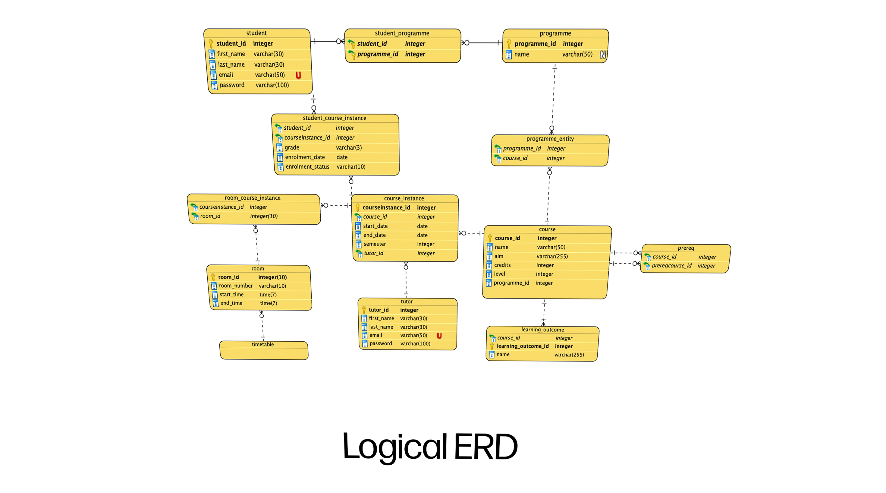
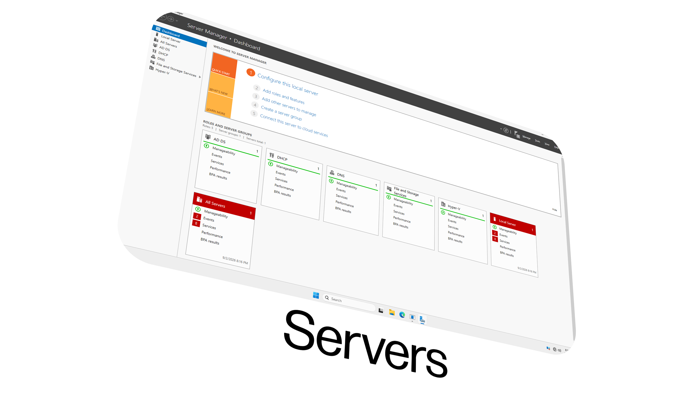

Devon Robinson
Student Developer
Learning • Designing • Building
Turning ideas into functional websites




About Me
I'm interested in everything information technology, from programming, design, networking, databases and more. I enjoy experimenting and exploring everything new and old in the IT world.
Currently expanding my skills at Nelson Marlborough Institute of Technology (NMIT). So far NMIT has helped me develop my skills around creating databases, taught me key skills and terminology around networking and designing, as well as growing my skills in JavaScript, HTML, CSS